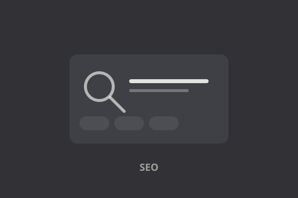
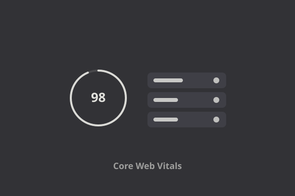
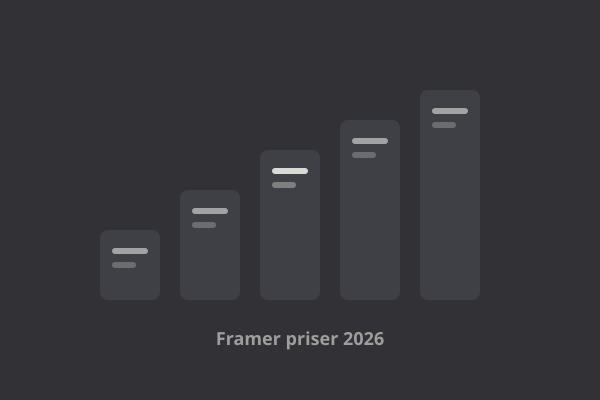

Alla artiklar — Guider, tips och tutorials om Framer.

Vad är Framer? En komplett guide — Allt du behöver veta om Framer — från grunderna till avancerade funktioner.

Framer vs WordPress (2026): Vilken plattform är bäst för din webbplats? — Djupgående jämförelse av prestanda, SEO, kostnad, flexibilitet och användarvänlighet — så väljer du rätt plattform 2026.

5 tips för att bygga snabbare i Framer — Spara tid och arbeta smartare. Fem konkreta tips som gör dig snabbare i Framer.

Framer CMS i praktiken (2026): Så bygger du en dynamisk webbplats utan kod — Hands-on guide till samlingar, fält, filter och detaljsidor — så bygger du en dynamisk sajt i Framer CMS utan kod.

Framer SEO 2026: Komplett guide till sökmotoroptimering — Meta-taggar, sitemap, Core Web Vitals och strukturerad data — så rankar du högre i Google med Framer.

Framer och Core Web Vitals 2026: Så får du topp-poäng i Google PageSpeed — Praktisk guide till LCP, CLS och INP — och en checklista för att nå 100/100 i PageSpeed med Framer.

Framer vs Webflow (2026): Vilken plattform är bäst för designers och marknadsteam? — Ärlig jämförelse av design, prestanda, SEO, CMS, animationer och pris — så väljer du rätt no-code-plattform.

Framer priser 2026: Alla planer jämförda (Free, Mini, Basic, Pro, Business) — Komplett översikt av Framers planer — vad ingår, vad kostar de och vilken plan passar dig.